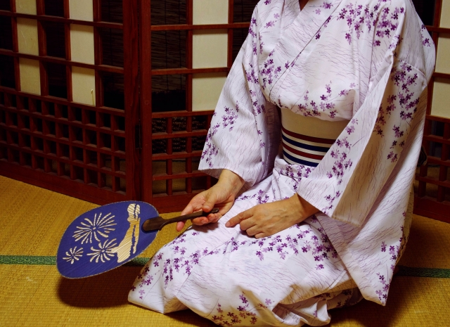
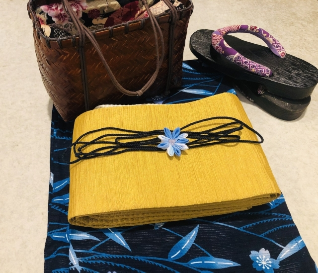
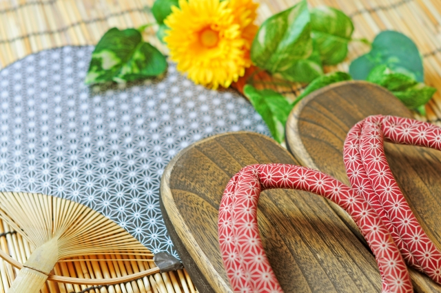
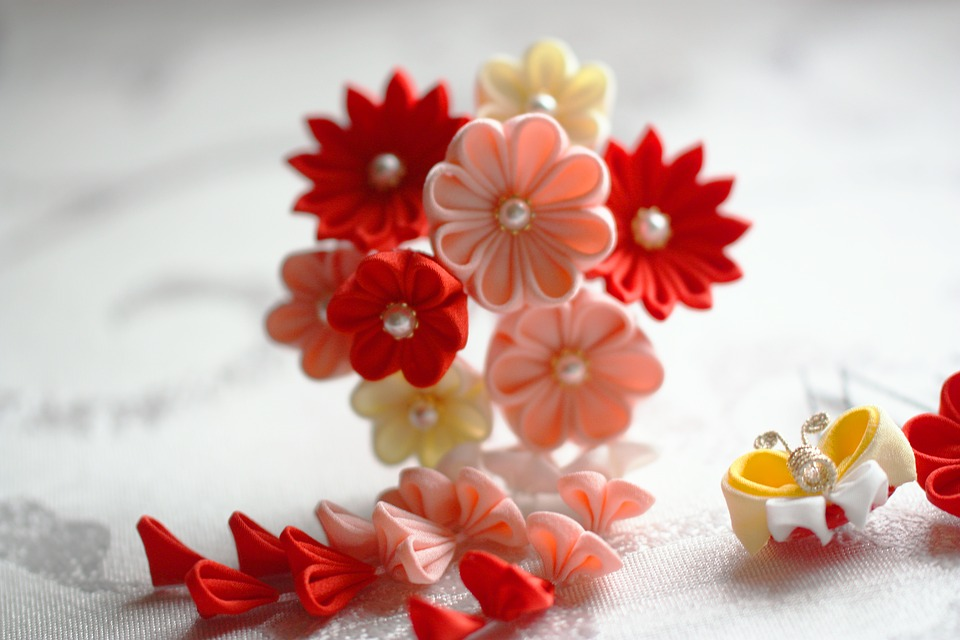

FURISODE
As with all women's kimono, the sleeves are attached to the body of
the kimono only at the shoulder, with the inner edge being open for the
rest of its length.

OBI
Obi is a sash for traditional Japanese dress.There are many types of
obi, most for women: wide obi made of brocade and narrower, simpler obi
for everyday wear. The fanciest and most colourful obi are for young
unmarried women.

ZORI
Zōri are flat and thonged Japanese sandals made of rice straw, cloth,
lacquered wood, leather, rubber or, most commonly and informally,
synthetic materials.

KANZASHI
Kanzashi are fabricated from a wide range of materials such as
lacquered wood, gold and silver plated metal, tortoiseshell and silk,
and recently, plastic. In fact, early bakelite kanzashi are highly
valued as collectibles.